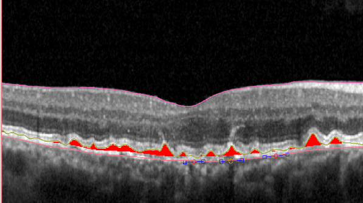
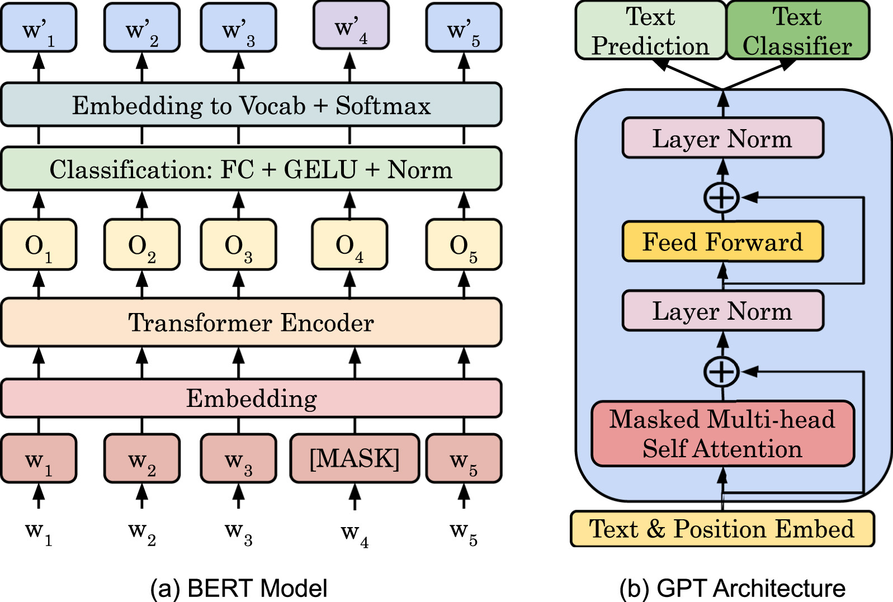
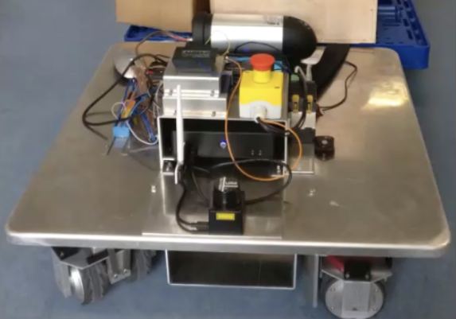
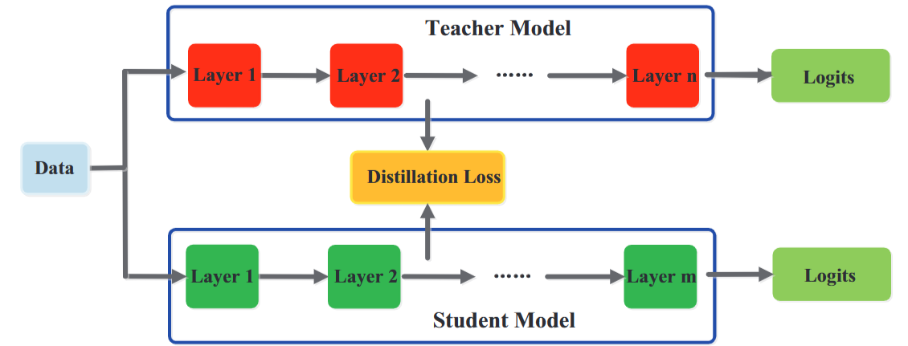

|
I recently graduated with an M.Sc. in Autonomous Systems from Hochschule Bonn-Rhein-Sieg (H-BRS), Germany. I completed my thesis on affordance-conditioned robot manipulation from egocentric human video, supervised by Prof. Sebastian Houben and Prof. Hermann Blum. I am currently a Research Assistant at the University of Bonn (RPL), working on leveraging human demonstration data to deploy skills on real robots. I am also building Guido, a mobile assistance robot for hospital patients. My interests are in robot learning, 3D perception, and getting modern policies to work on real hardware. |

|

|
Kavya Shankar In progress, 2026— updates A mobile robot built to help patients in hospitals — wayfinding, fetching, and a friendly presence. Started in March 2026. ROS 2, with SLAM and Nav2. |

|
Kavya Shankar M.Sc. Thesis, Hochschule Bonn-Rhein-Sieg, 2026 Advisors: Prof. Sebastian Houben, Prof. Hermann Blum A diffusion-based trajectory policy that learns manipulation from egocentric human videos, conditioned on detected functional elements (handles, knobs, buttons). Achieves 63.5% real-world success on drawer/door tasks on the Hello Robot Stretch — a 36 percentage point improvement over the simulation-pretrained baseline. |

|
Pre-thesis R&D, SceneFun3D benchmark Multi-view YOLO + SAM pipeline for lifting 2D functional-element detections into 3D point clouds. Voxel accumulation, DBSCAN clustering, plane segmentation, and SAM2 tracking, with iterative mAP optimisation across several lifting strategies. |
|
 |
Research mini-project Integrated the EVA-02 Vision Transformer backbone into an OCT retinal layer segmentation pipeline, replacing the default CNN encoder to improve representation learning on sparse medical-imaging data. |
|
@ ubiMaster, industry research Hybrid time-series model predicting daily question volumes across maths, science and language subjects. Combined classical temporal features with user-activity embeddings to improve over pure ARIMA and pure-ML baselines. |
|
|
 |
@ Vaillant Group, NLP research Zero-shot transfer from high-resource to low-resource languages for industrial spare-part recommendation. BERT feature extraction, t-SNE representation analysis, and hybrid retrieval-classification strategies. |
|
 |
Robotics coursework Inverse-kinematics controller computing wheel torques from a desired platform force. Direct EtherCAT communication via SOEM, with BLAS/LAPACK for the numerical solve, in C. |
|
 |
Deep learning project Knowledge-distillation model trained on OpenFace visual features across therapy sessions to estimate child engagement during robot-assisted autism therapy. Small-data, high- stakes, per-subject generalisation. |
| April 2026 – present | RPL @ University of Bonn, Bonn — Research Assistant. Leveraging human demonstration data for robot learning with diffusion models. |
| Oct 2024 – Feb 2026 | PhenoInspect, Bonn — Student Data Assistant. Annotation, segmentation and QA of agricultural plant imagery for ML training sets; workflows around SAM-assisted labelling. |
| Apr 2024 – Jul 2024 | ubiMaster, Germany — Student, AI Solutions. Time-series forecasting for early human-in-the-loop intervention signals in an EdTech product. |
| Jan 2023 – Sep 2023 | Vaillant Group, Germany — Student, NLP Research. Feature-extraction strategies for a multilingual spare-part recommendation prototype. |
| Nov 2021 – Dec 2022 | Fraunhofer IAIS, Sankt Augustin — Student Research Assistant. News-classification research with a focus on zero-shot transfer and representation analysis. |
| Sep 2020 – Jan 2021 | Covalensedigital, India — Software Developer. Subscription-monetisation solutions for telecom clients across C, Java/J2EE and PL/SQL. |
| 2021 – 2026 |
M.Sc. Autonomous Systems Hochschule Bonn-Rhein-Sieg, Germany |
| 2016 – 2020 |
B.Tech. Computer Science & Engineering Presidency University, Bangalore, India |
| April 2026 |
Day 1 of building Guido Why I started building a hospital robot after being a patient myself. |
Template stolen with love from Jon Barron.